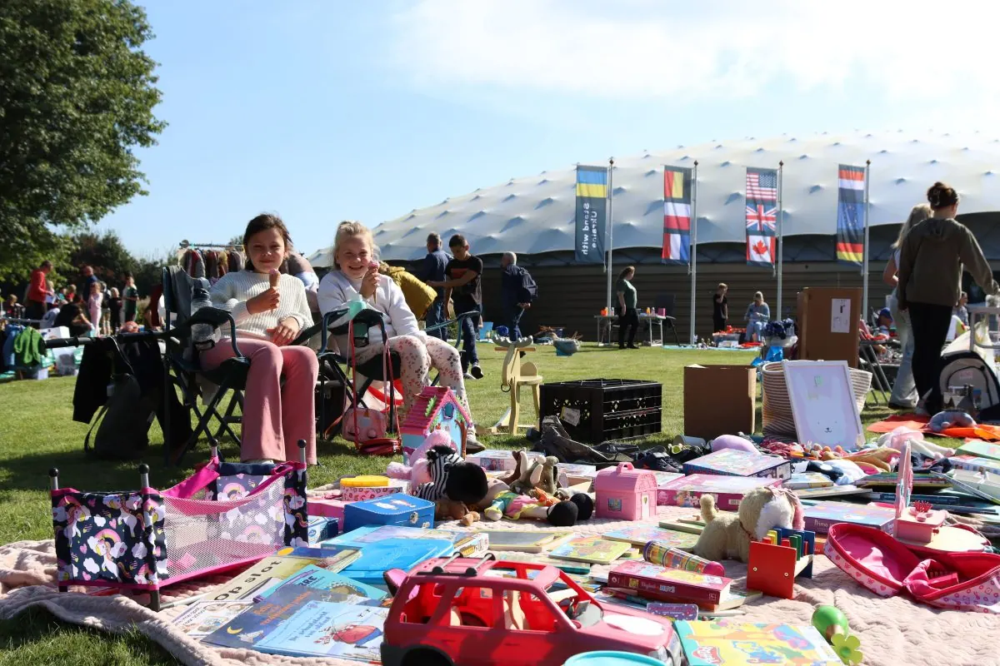
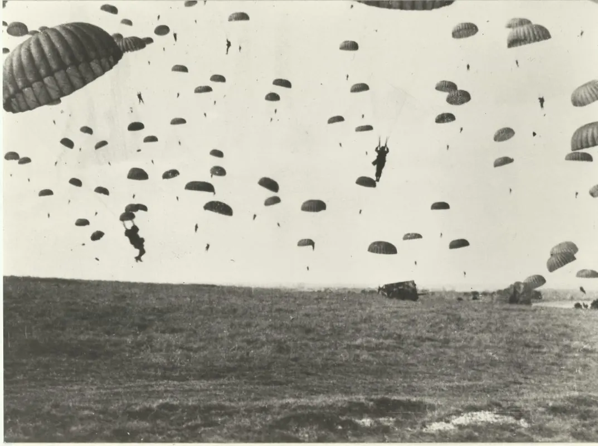
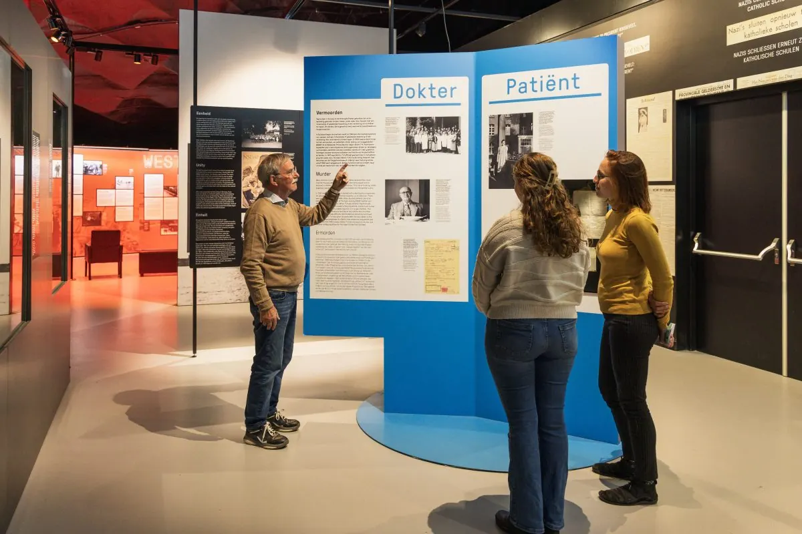
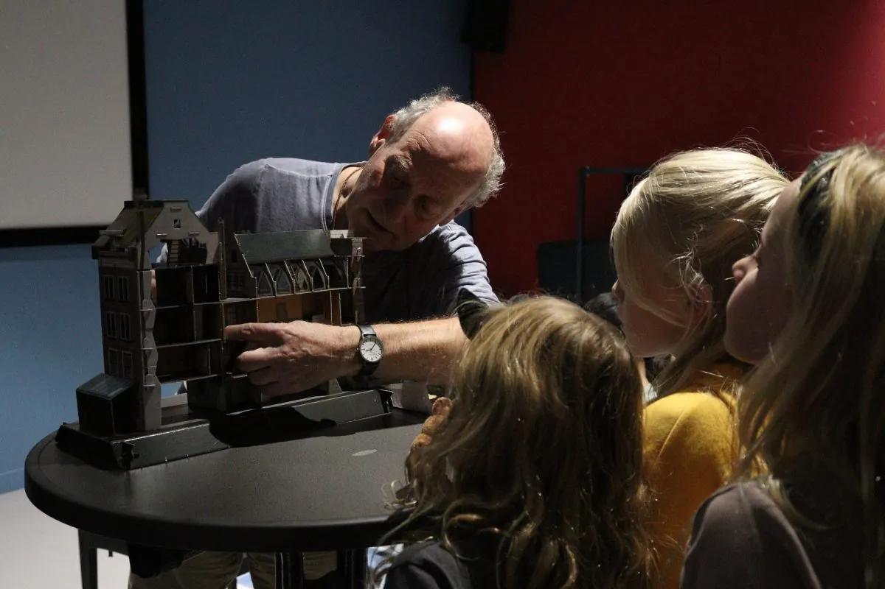
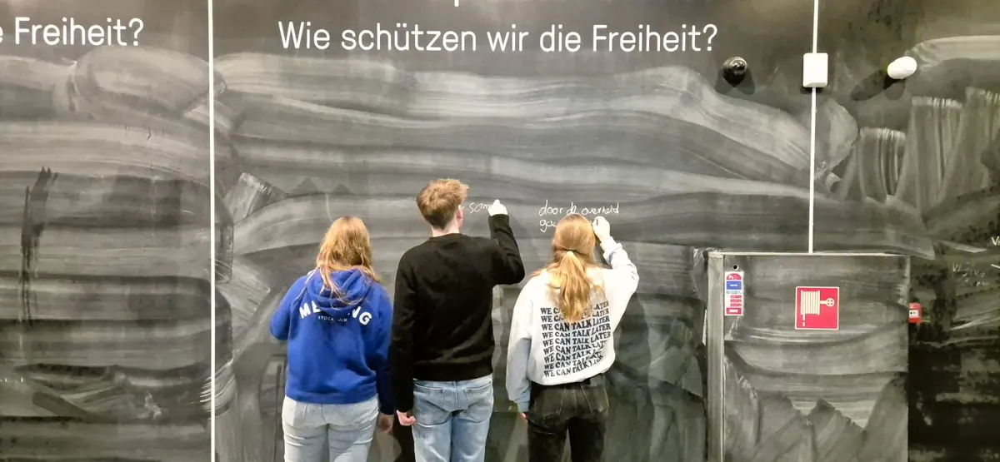

Evenementen bij Vrijheidsmuseum
Wylerbaan 4, 6561 KR Groesbeek
Binnenkort
22okt UitgelichtWojtek! De beer die soldaat werdNu, t/m 4 aprVrijheidsmuseum
25okt
UitgelichtWojtek! De beer die soldaat werdNu, t/m 4 aprVrijheidsmuseum
25okt UitgelichtHighlight Tours in het Vrijheidsmuseum25 okt, 14.00 uurVrijheidsmuseum
29nov
UitgelichtHighlight Tours in het Vrijheidsmuseum25 okt, 14.00 uurVrijheidsmuseum
29nov UitgelichtHighlight Tours in het Vrijheidsmuseum29 nov, 14.00 uurVrijheidsmuseum
27dec
UitgelichtHighlight Tours in het Vrijheidsmuseum29 nov, 14.00 uurVrijheidsmuseum
27dec UitgelichtHighlight Tours in het Vrijheidsmuseum27 dec, 14.00 uurVrijheidsmuseum
UitgelichtHighlight Tours in het Vrijheidsmuseum27 dec, 14.00 uurVrijheidsmuseum
UitgelichtWojtek! De beer die soldaat werdNu, t/m 4 aprVrijheidsmuseum
25oktUitgelichtHighlight Tours in het Vrijheidsmuseum25 okt, 14.00 uurVrijheidsmuseum
29novUitgelichtHighlight Tours in het Vrijheidsmuseum29 nov, 14.00 uurVrijheidsmuseum
27decUitgelichtHighlight Tours in het Vrijheidsmuseum27 dec, 14.00 uurVrijheidsmuseum
Eerder bij Vrijheidsmuseum
27sep UitgelichtHighlight Tours in het Vrijheidsmuseum27 sep 2026Vrijheidsmuseum
26sep
UitgelichtHighlight Tours in het Vrijheidsmuseum27 sep 2026Vrijheidsmuseum
26sep UitgelichtOpen inschrijving: Battlefieldtour Operatie Market Garden26 sep 2026Vrijheidsmuseum
20sep
UitgelichtOpen inschrijving: Battlefieldtour Operatie Market Garden26 sep 2026Vrijheidsmuseum
20sep UitgelichtHighlight Tours in het Vrijheidsmuseum30 aug 2026Vrijheidsmuseum
19aug
UitgelichtHighlight Tours in het Vrijheidsmuseum30 aug 2026Vrijheidsmuseum
19aug UitgelichtHighlight Tours in het Vrijheidsmuseum26 jul 2026Vrijheidsmuseum
4julUitgelichtEmma actie – gratis toegang4 jul 2026Vrijheidsmuseum
UitgelichtHighlight Tours in het Vrijheidsmuseum26 jul 2026Vrijheidsmuseum
4julUitgelichtEmma actie – gratis toegang4 jul 2026Vrijheidsmuseum
UitgelichtHighlight Tours in het Vrijheidsmuseum27 sep 2026Vrijheidsmuseum
26sepUitgelichtOpen inschrijving: Battlefieldtour Operatie Market Garden26 sep 2026Vrijheidsmuseum
20sep
Vrijheidsfestival20 sep 2026Vrijheidsmuseum 16sep
UitgelichtDe strijd van de 82nd Airborne Divisie tijdens operatie Market Garden16 sep 2026Vrijheidsmuseum 30augUitgelichtHighlight Tours in het Vrijheidsmuseum30 aug 2026Vrijheidsmuseum
19aug
Kijk je ogen uit – familiedag19 aug 2026Vrijheidsmuseum 10aug
UitgelichtAnne Frank middag10 aug 2026Vrijheidsmuseum 10augUitgelichtAnne Frank middag10 aug 2026Vrijheidsmuseum 4aug
UitgelichtKijk je ogen uit – familiedag4 aug 2026Vrijheidsmuseum 26julUitgelichtHighlight Tours in het Vrijheidsmuseum26 jul 2026Vrijheidsmuseum
4julUitgelichtEmma actie – gratis toegang4 jul 2026Vrijheidsmuseum